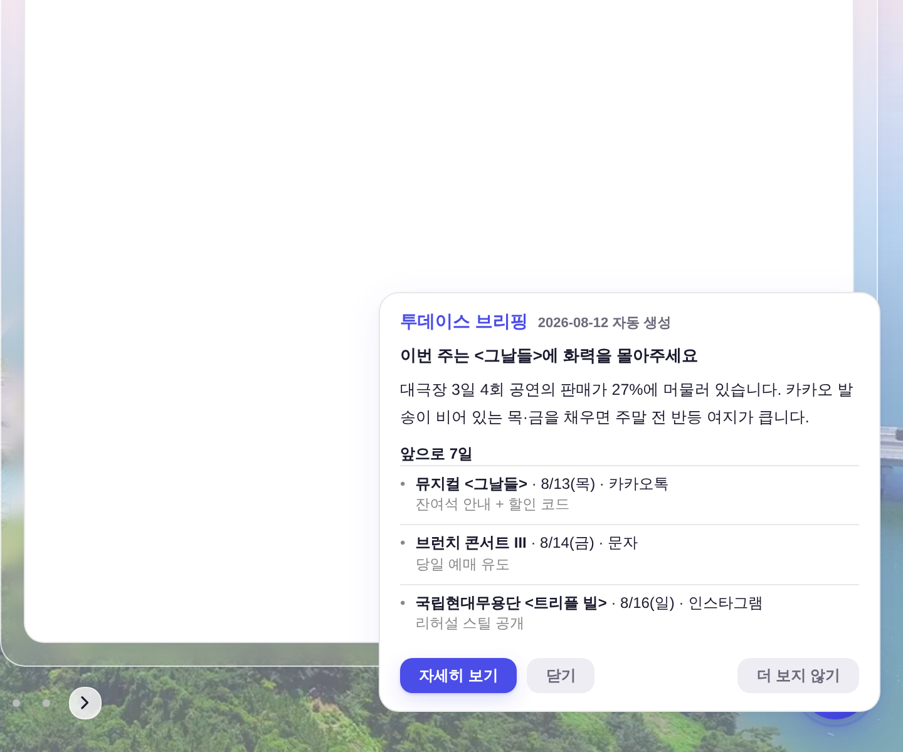
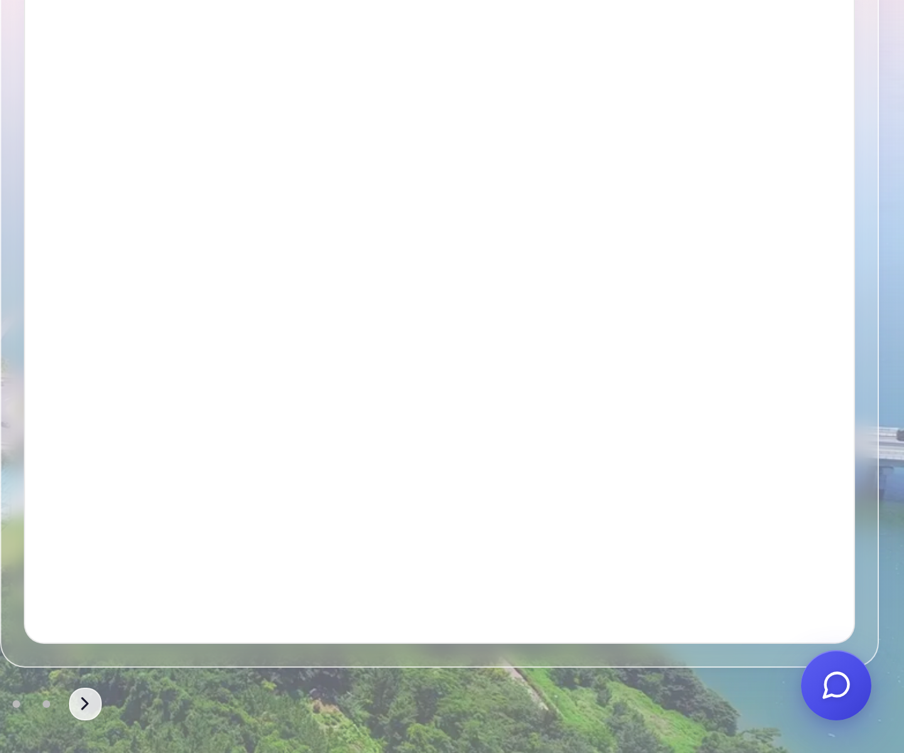
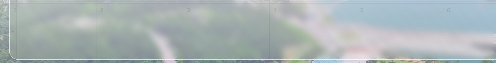
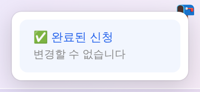
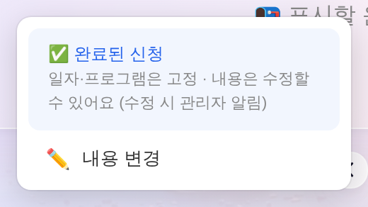
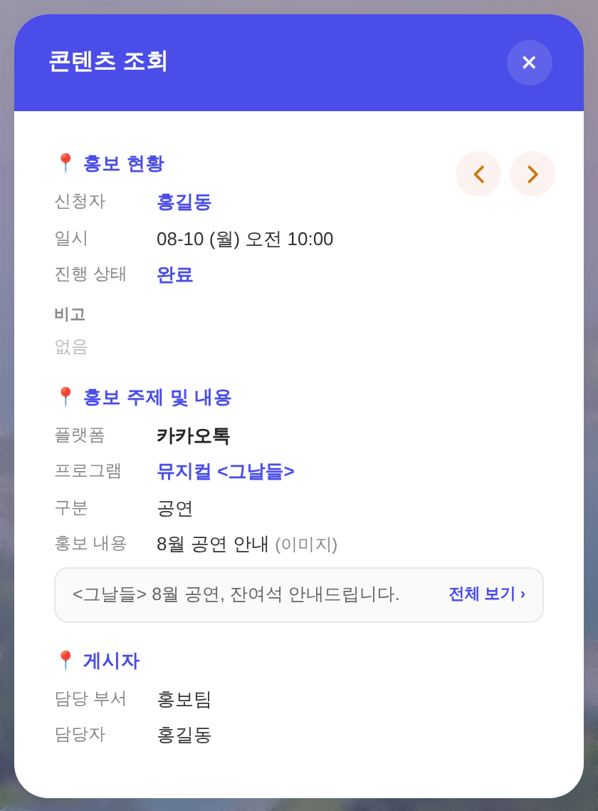
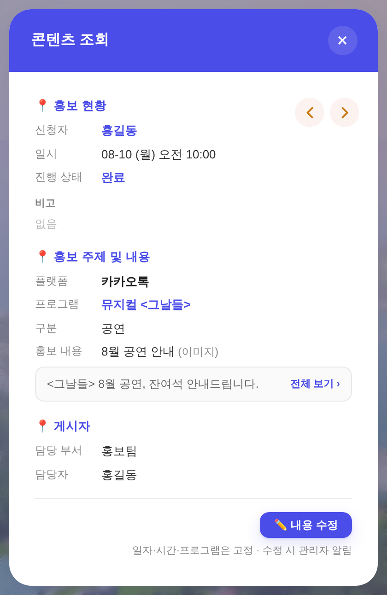
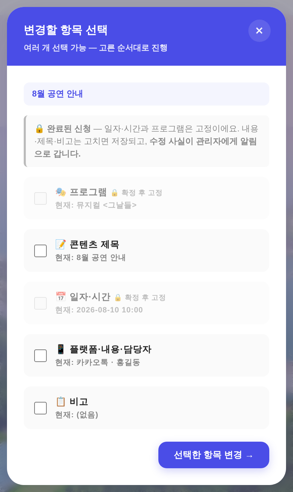

운영자 지시 3건(①투데이스 브리핑 안 나오게 ②빗금은 옅게·글자는 원래 색 ③완료된 본인 건 내용 수정 + 관리자 알림) ·
화면 = 결정적 목데이터(tools/qa_mock_ops.mjs) ?qa= 경로 · 실API·실데이터·PII 미접촉.
끈 것은 자동 팝업 한 자리(initApp의 _paTodayPop() 호출)뿐이다. 브리핑 본체·「AI 홍보」 메뉴 경로·크론은 손대지 않았다.


실측: 브리핑 API 2종(/api/promo/auto-latest·/api/blog/draft)을 가짜 응답으로 채워 팝업이 뜨는 조건을 갖춘 상태에서 부팅 —
전 {shown:true} · 후 {shown:false}(4.5초 대기).
_paTodayPop·_paTodayOff·#pa-today는 그대로 살아 있다. 롤백 = 주석 1줄 해제.빗금(.diag = 45° 대각선 α.02)이 쳐지는 칸 = 다음 달 날짜 칸(.c.nm). 구판은 빗금뿐 아니라 날짜 글자까지 rgba(0,0,0,0.1)로 지워 숫자가 안 읽혔다.
rgba(0,0,0,0.1) (1·2·3·4·5·6이 거의 안 보임)
var(--text) = rgb(26,26,46) · 빗금은 그대로| 축 | 전 | 후 |
|---|---|---|
날짜 글자(.dn.nm) | rgba(0,0,0,0.1) | var(--text) — 이번 달 칸과 같은 잉크 |
빗금(.diag) | 무접촉 — repeating-linear-gradient(45deg … rgba(0,0,0,0.02)) 그대로(실측 diag:true 유지) | |
칸 배경(.c.nm) | 무접촉 — var(--nm-bg) | |
「본인이여야 함」이 유일한 관문(_isMineRec). 남의 건은 상태와 무관하게 열리지 않는다.
잠금은 일시·항목만 — 260812 확정('예정') 건 규칙(_CW_LOCK_STEPS=[1,3])을 그대로 '완료'까지 확장했다(규칙 갈래 신설 0).
| 경로 | 전 | 후 |
|---|---|---|
| 캘린더 우클릭 (보드 행·날짜 패널 카드 공용) | ✅ 완료된 신청 — 변경할 수 없습니다 | ✅ 완료된 신청 — 일자·프로그램은 고정 · 내용은 수정 가능 + [✏️ 내용 변경] |
| 조회 모달 (캘린더 좌클릭 · 일정 확인 보드 · 메시지함이 전부 지나는 길목) | 버튼 없음 — 읽기만 | [✏️ 내용 수정](.btn btn--primary btn--sm 정본) + 고정 축 안내 |
| 변경 메뉴 | 안 열림(권한 차단) | 열림 · 프로그램·일자/시간 2줄 자물쇠, 제목·플랫폼/내용/담당자·비고는 열림 |
| 저장 | 「완료·취소된 일정은 변경할 수 없어요」로 거부 | PATCH 저장 + 관리자 전원에게 알림 |





renderReadOnlyView(조회 모달) 한 곳을 지난다 — 버튼을 그 한 자리에 두면 전 경로가 동시에 열린다.
우클릭 메뉴는 별도로 손봤다(터치 기기엔 우클릭이 없고, 마우스 사용자는 우클릭이 더 빠르다).
?qa=1) 실렌더| 항목 | 결과 | 실측값 |
|---|---|---|
권한 술어 _cwUserCanEdit | 정확 | 내 완료 true · 내 예정 true · 내 신청 중 true · 내 취소 false · 타인 완료 false |
| 타인 완료 건 변경 메뉴 | 차단 | openChangeWizard 호출해도 모달 안 열림(openedForOther:false) |
| 변경 메뉴 잠금 | 2줄 | step1(프로그램)·step3(일자·시간) disabled · step2·4·6 열림 |
| 저장(내용만) | 통과 | PATCH /api/records/101 1회 · 토스트 「변경 사항이 저장됐어요」 |
| 관리자 알림 | 2명 | 관리자여부 ON 2명에게만(일반직원 제외 · 고친 본인 제외) — trigger:'내용 수정' |
| 완료 건 일정 축 시도 | 차단 | PATCH 0회 · 「완료된 일정은 일자·프로그램을 바꿀 수 없어요」 |
| 조회 모달 버튼 실클릭 | 동작 | 변경 메뉴 열림 · 조회 모달 닫힘 · _schedReturnFlag=false(보드 되살아나 겹치는 것 차단) |
| 디자인 게이트 | 통과 | raw hex index 1540/1540 증가 0 · :root 2/0 · X아이콘 84개 정본 |
check_refs·check_wiring·build_annual_yr | 통과 | _YR 누계 1,537,516 · 누적 3,721,841 |
smoke_login·smoke_layout | PASS | 로그인 렌더·이젤 Δ0 |
인라인 스크립트 node --check | 9/9 | 전 블록 파싱 · 헤드리스 JS 에러 0(전·후 각 3화면) |
① 권한 술어 = {"myDone":true,"myPlan":true,"myOpen":true,"myCancel":false,"otherDone":false}
⑤ 관리자 알림 = [{"to":"관리자A","trigger":"내용 수정","reason":"홍길동 님이 완료 건을 수정했어요 — 플랫폼·내용·담당자"},
{"to":"관리자B", … }]
일정 축 시도 — PATCH [] toast ["error:완료된 일정은 일자·프로그램을 바꿀 수 없어요 — 내용만 수정할 수 있어요"]
완료 건의 내용 수정이 다른 규칙에 걸려 조용히 막히는 자리를 두 곳 열었다. 예정·신청 중 건의 판정은 무변이다.
_perf=null). 안 그러면 「홍보 종료 후라 홍보할 수 없어요」가 오탈자 수정까지 막는다.각주 — 3번 화면은 실제 시트 대신 목 레코드(신청자 「홍길동」)를 주입해 재현했다. 브리핑 팝업은 QA 모드에 실데이터가 없어 API 2종을 가짜 응답으로 채워 「뜨는 조건」만 만들었다 — 팝업 마크업·위치는 정본 그대로다.